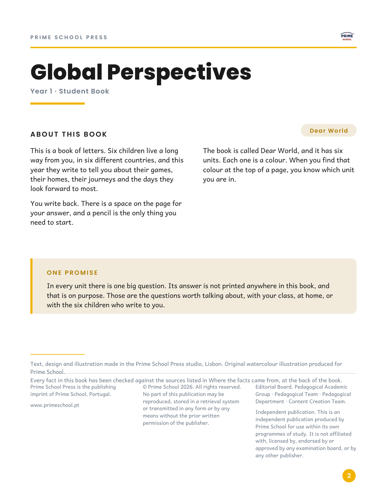
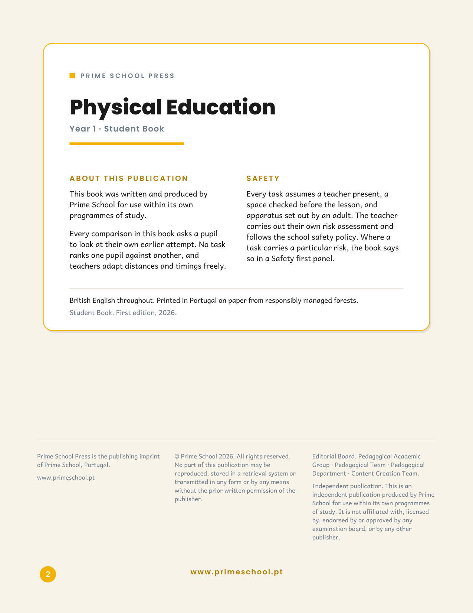
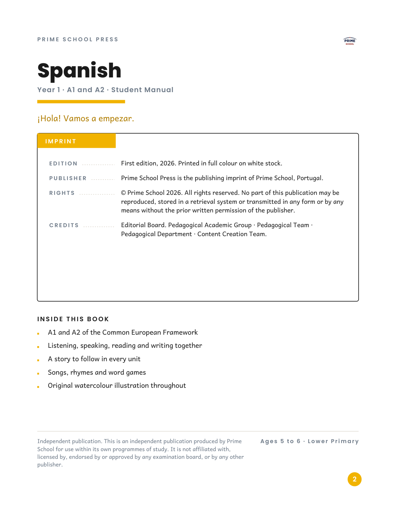
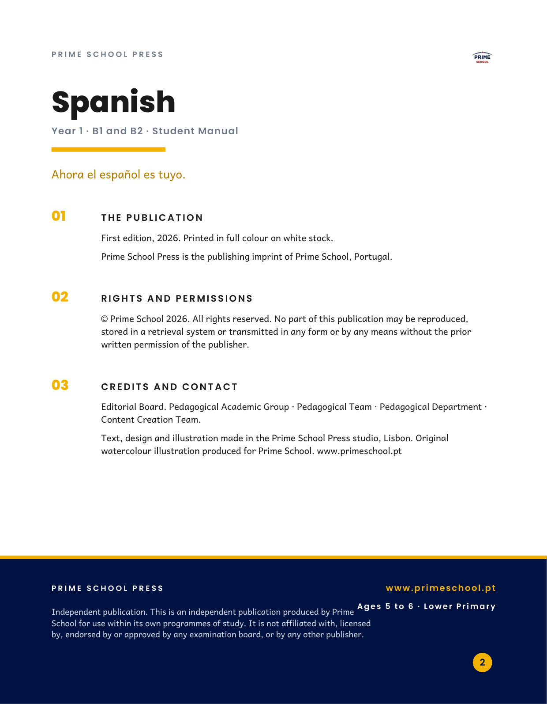

One fresh page 2 for each Year 1 book, so one can be chosen as the standard for Years 1 to 5. Each book already carries its own version, so you can also open the books themselves and turn to page 2.

Design 1 · Editorial colophonTop rule with tracked imprint and the school mark, title block, two-column About text, cream One promise panel, three-column legal footer. Shown on y01-global-perspectives.

Design 2 · Card on sepiaWhite card floating on a warm sepia page, amber hairline border, About in the left column and Safety in the right, legal block below the card. Shown on y01-physical-education.Design 3 · Amber ribbonFull-height amber spine ribbon with vertical imprint lettering, display title over a rule, cream feature panel with bulleted list, legal footer. Shown on y01-german-a1a2.Design 4 · Centred mastheadClassic centred colophon: school mark, double rule, centred title over a narrow measure, flanked section head, centred imprint foot. Shown on y01-german-b1b2.

Design 5 · Index cardBordered index card with an amber IMPRINT tab and dotted leader lines linking each label to its value, feature list below. Shown on y01-spanish-a1a2.

Design 6 · Numbered editorialThree numbered editorial sections above a full-width navy foot band with the imprint in white and the site in amber. Shown on y01-spanish-b1b2.Design 7 · Keyline frameFine amber keyline frame with corner ticks, centred masthead, dot-grid ornament, tidy centred colophon and badge. Shown on y01-portuguese.